Regag, chebaband karak, straightoff the tawa.
Emirati breads from the tawa since 1971. Al Warqa 2, open every day 6am to 11:30pm.
or call the shop on 04 280 1183
Open nowServing window, Al Warqa 2
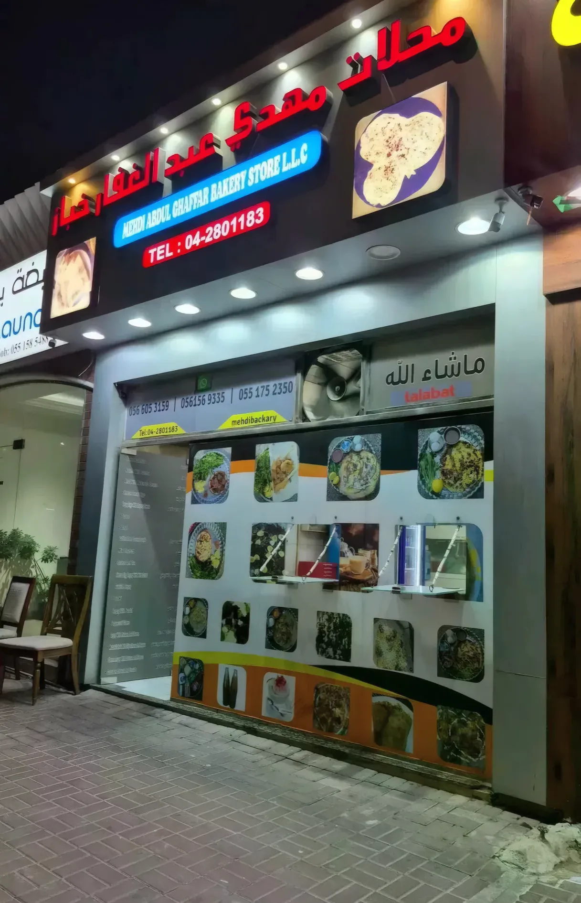
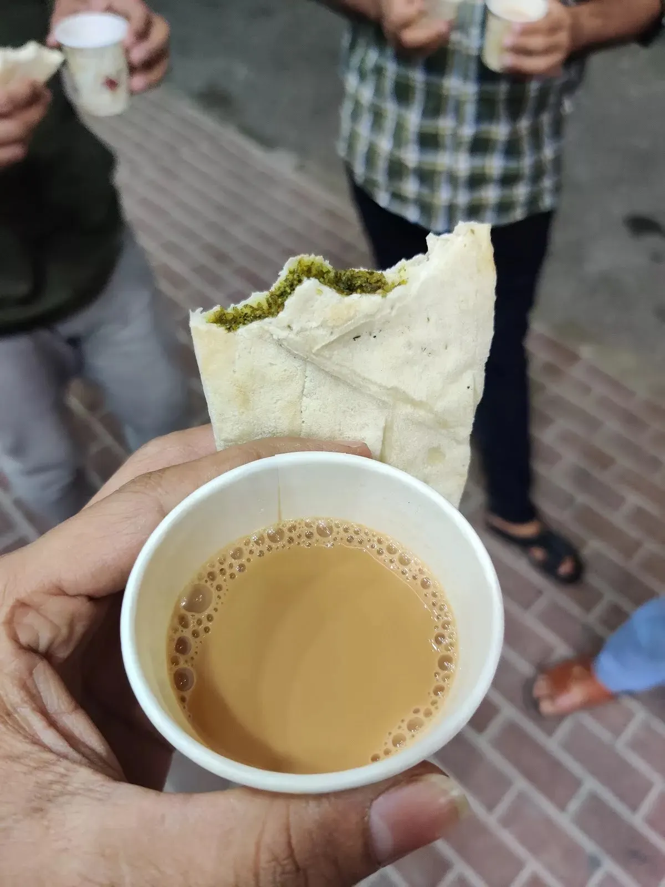
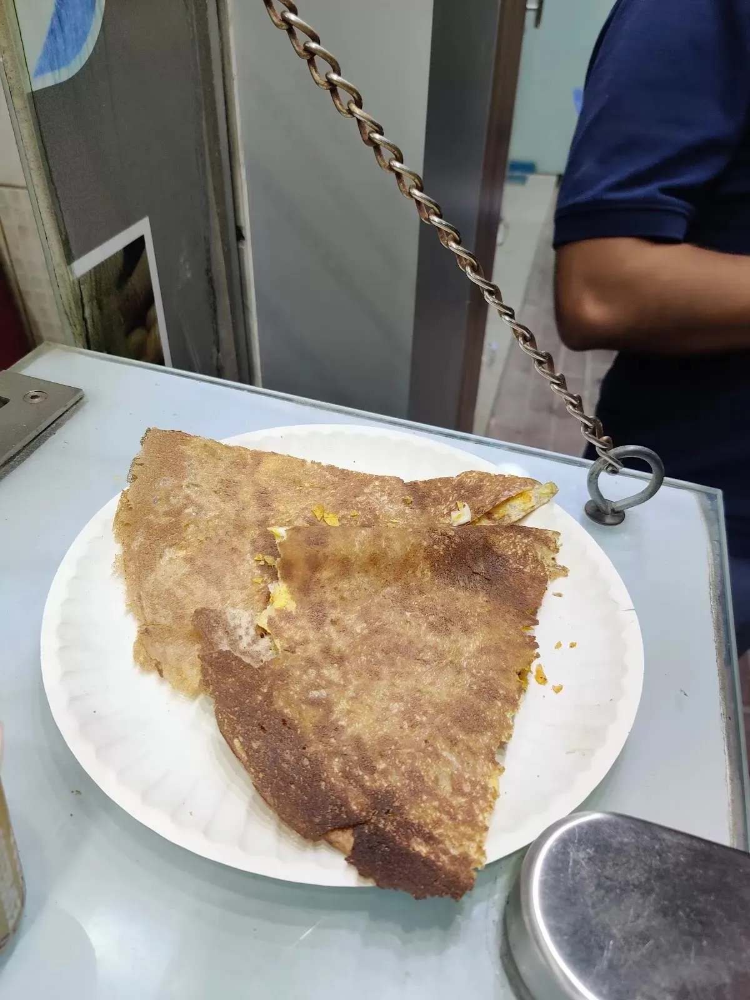
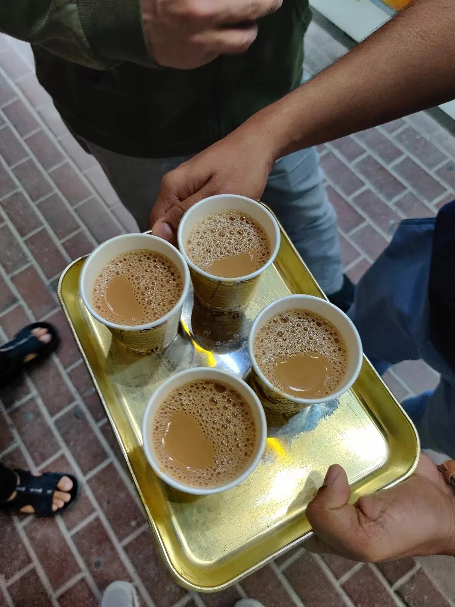
What comes off the tawa
The same things that are painted on our menu board, made when you order. Hover or tap a line to see it.
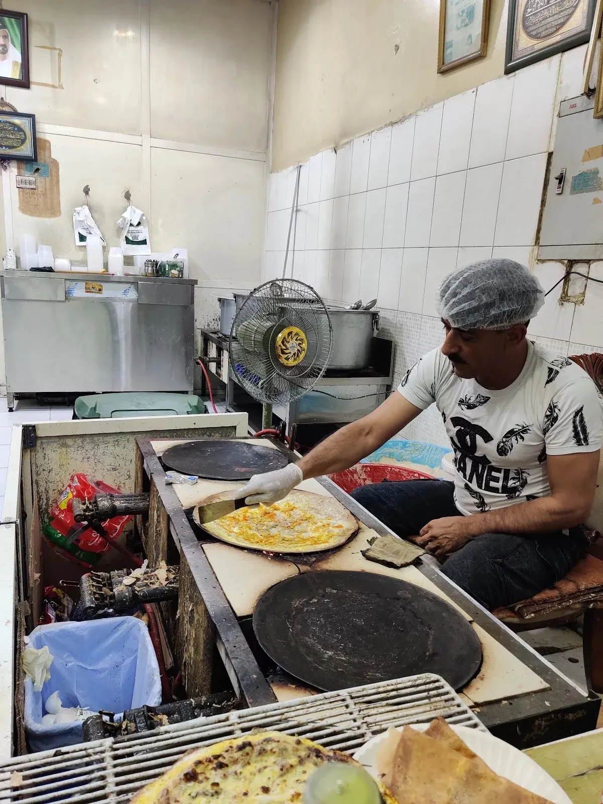
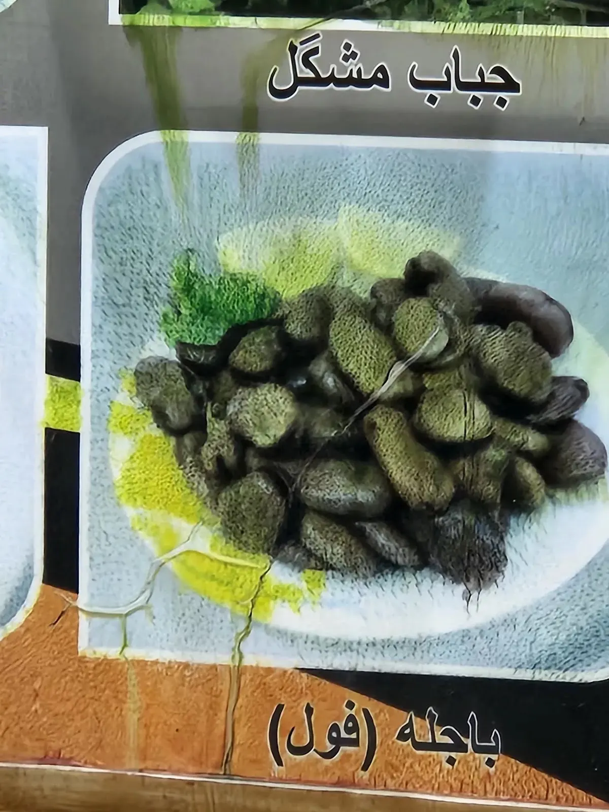
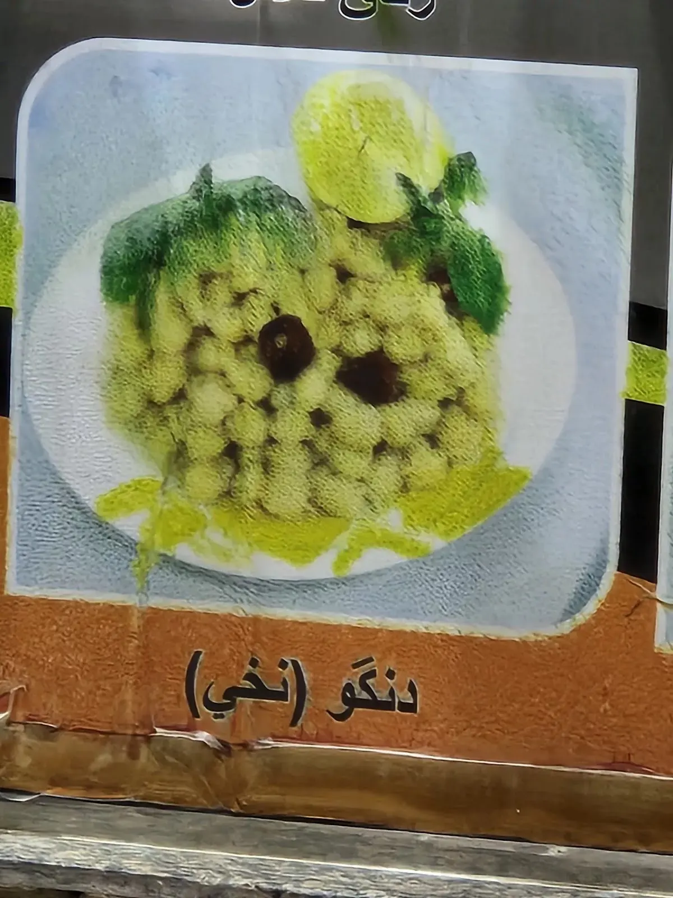
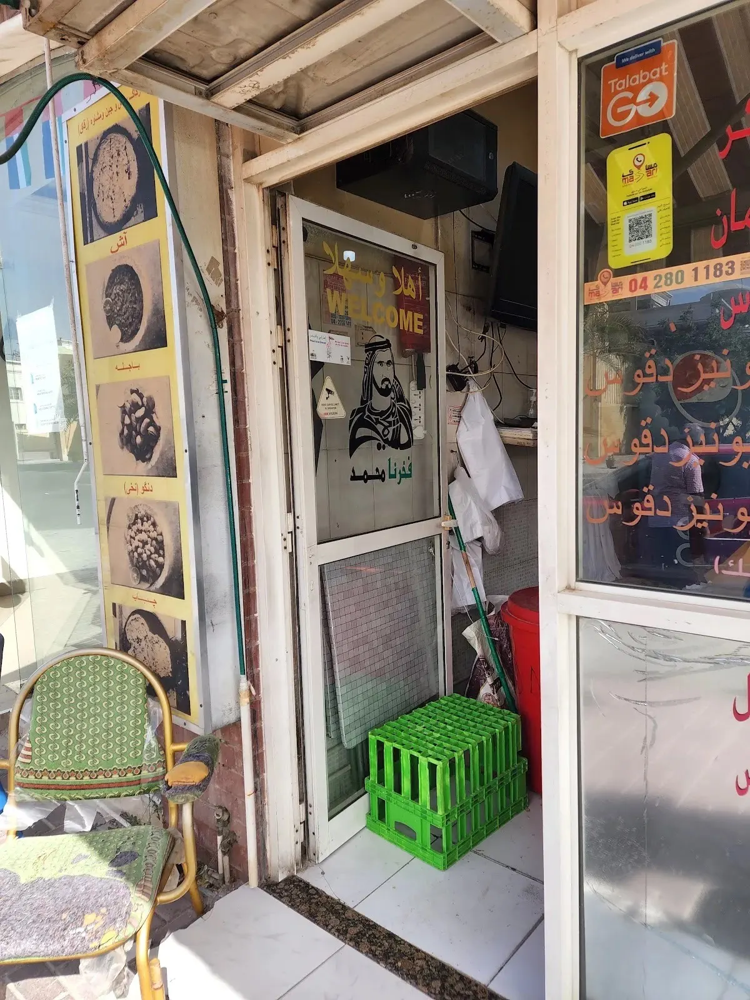
- 01Regagرقاق
Paper-thin bread spread by hand on the tawa. With egg, cheese and zaatar; mortadella and mozzarella; falafel; or the Turkish way.
- 02Chebabچباب
The thick Emirati pancake, plain or as mixed chebab.
- 03Bajillaباجلّا
Boiled broad beans, the old breakfast plate.
- 04Dangawدنگو
Boiled chickpeas, served the way it's shown on the board, with lemon.
- 05Aashآش
On the board by the door, next to bajilla and dangaw. Ask us what's in the pot today.
- 06Karakكرك
Sweet milky tea in paper cups. One cup, or a tray for everyone.
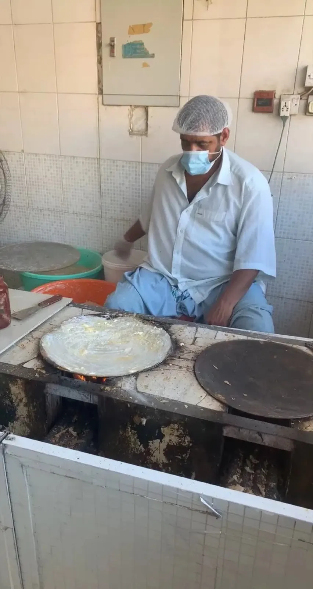
Spread by hand, one round at a time.
It's written on the board over our door: established 1971. The bread is still made the old way: the baker sits at the tawa and spreads every regag himself, then it goes straight out through the window.
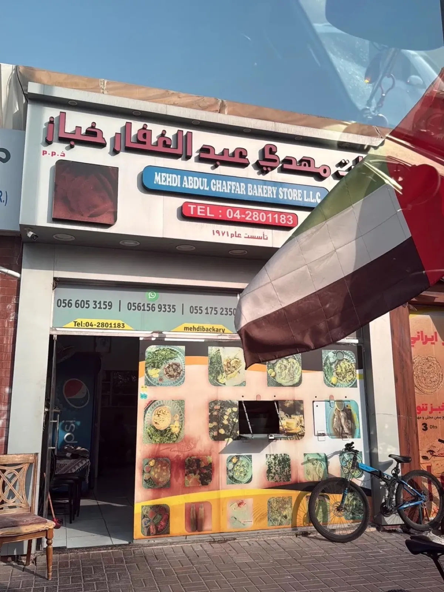
Look for the red Arabic sign, the round bread lightboxes and the menu painted across the shutter.
From the shop
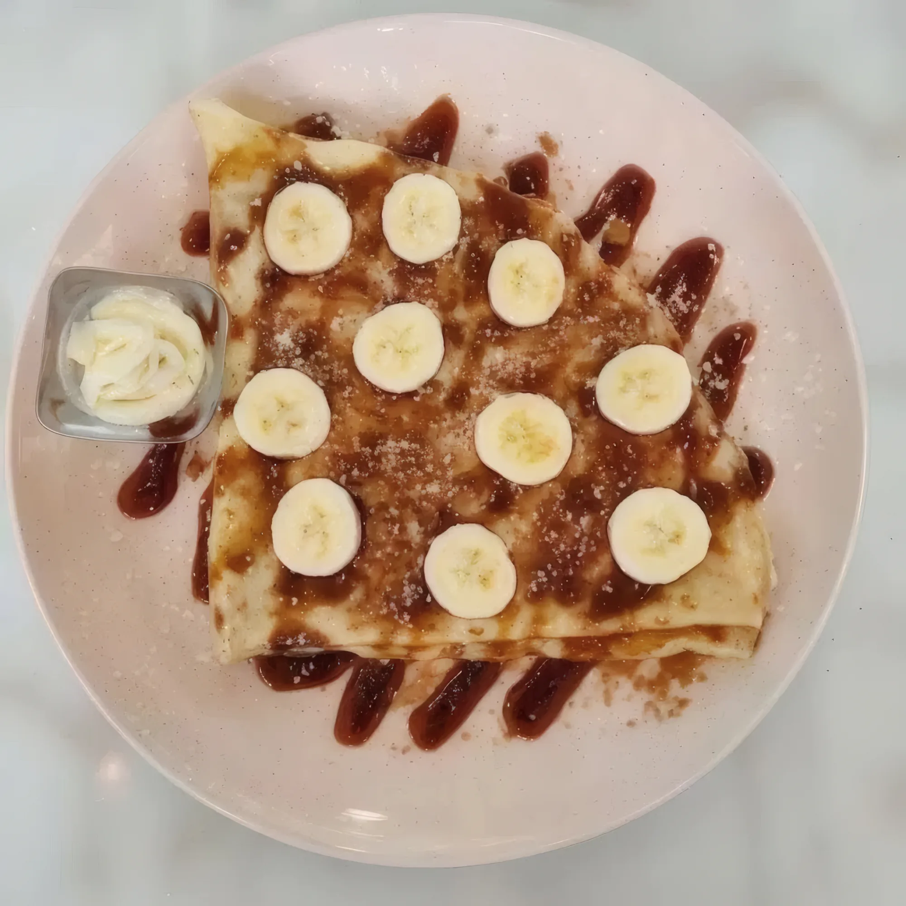
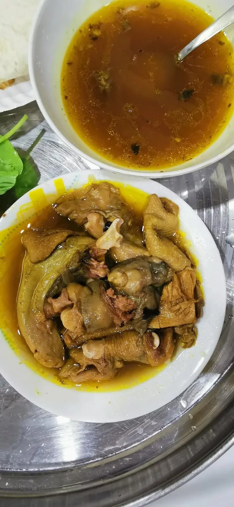
WhatsApp your order. Pick it up hot from the window.
Find us in Al Warqa 2
Open nowMehdi Abdul Ghaffar Bakery Store, Al Warqa 2 (Al Warqa'a Second), Dubai
Plus code 6C25+XP4. Look for the red Arabic sign and the bread lightboxes above the shutter.
Every day 6:00am – 11:30pm
- Shop04 280 1183
- Mobile / WhatsApp056 605 3159
- Mobile056 156 9335
- Mobile055 175 2350